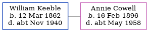

William George Keeble 1862 - c1940
[ Home ] | [ Calendar ] | [ Surnames Index ] | [ Errors ] | [ Family History ]William Keeble, the husband of Annie Emily Cowell (the second cousin twice-removed on the mother's side of Nigel Horne), was born on 12 Mar 18621,2. He married Annie at St Mary the Virgin Church, Nonington, Kent, England on 10 Jan 19233. On 29 Sept 1939, he was living at 1 The Huts, Snowdown, Kent1.
He died c. Nov 1940 in Eastry, Kent, England2.
Citations
- 1939 Register - Findmypast (was the head of the household)
- England & Wales deaths 1837-2007 - Findmypast
- England & Wales Marriages 1837-2005 - Findmypast
Media
Kent, Canterbury Archdeaconry Marriages Transcription - GBPRS-CANT-M-97044861-2
1939 Register Transcription - TNA-R39-1821-1821G-002-04
England & Wales deaths 1837-2007 - BMD/D/1940/4/AZ/000609/001
England & Wales marriages 1837-2005 - BMD/M/1923/1/AZ/000487/062
Kent, Canterbury Archdeaconry marriages - GBPRS/CANT/M/97044861/1
Family Tree
Map
Generated by ged2site. Last updated on Jul 3, 2024
Known Issues
Date of birth is known, but not place
No records of living with anyone